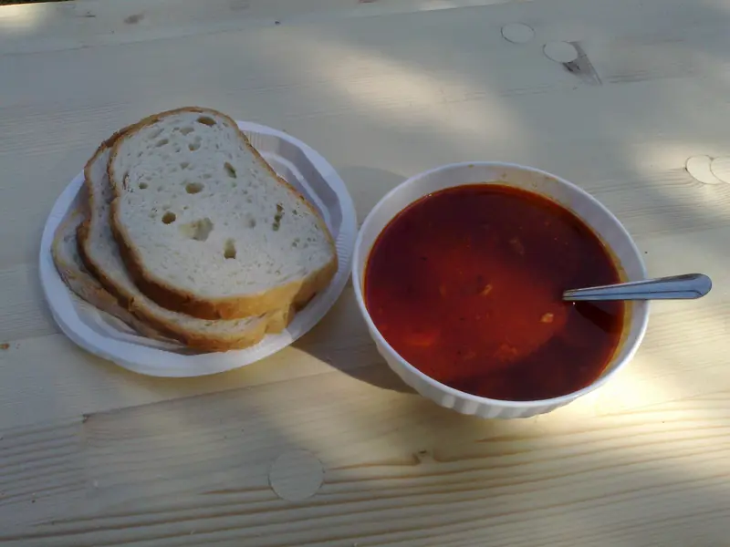
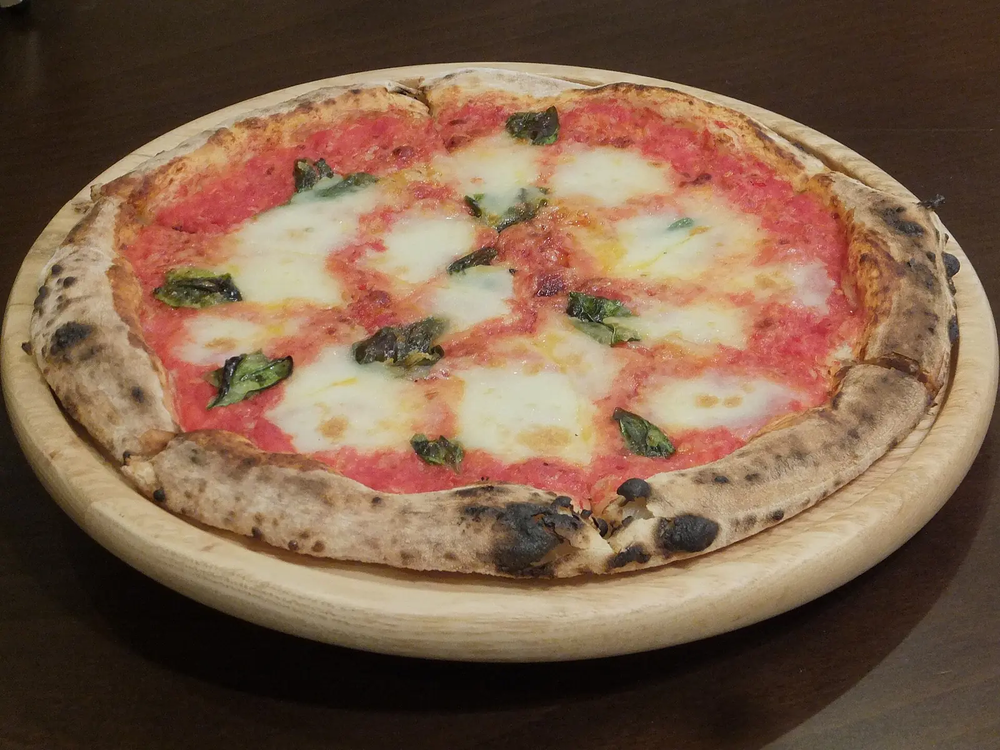
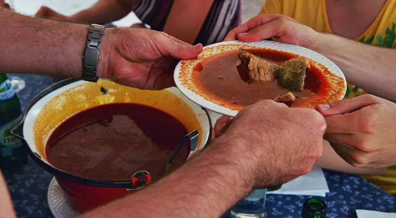
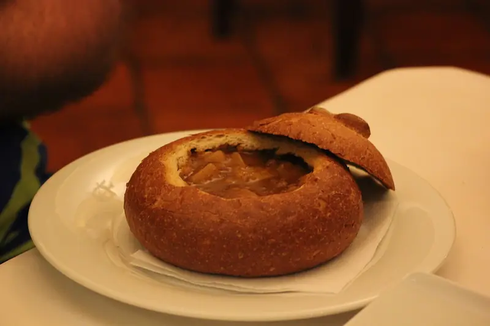

Nyitvatartás betöltése…
Pizza, gulyás, rántott hús. Bátaszéken, a Bajai úton.
Üljön be ebédre, vigye el, vagy kérje házhoz. Egy telefon, és már készül.
Reggeltől estigReggeli, ebéd, vacsora egy helyen
Elvitelre és házhozHívja fel, és megmondjuk, mikorra lesz kész
Parkoló a ház előttKényelmes megálló, ha átutazóban van
Mai menü
Leves és főétel, gyorsan, ebédidőben. Hétköznap minden reggel frissül.
A menüt Önök írják be reggelente telefonról, egy perc alatt. A fenti fogások csak példák.
Étlap
Magyaros fogások, pizza, tészta. A véglegesbe az Önök teljes étlapja kerül, árakkal.




Családi ebéd, szülinap, céges vacsora
Írja meg, hányan jönnének és mikor, mi pedig visszahívjuk az ajánlattal.
- Asztalfoglalás nagyobb társaságnak
- Előre egyeztetett menü, hogy ne kelljen várni
- Tálak és pizzák elvitelre, rendezvényre